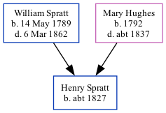

Henry Spratt c1827 -
[ Home ] | [ Calendar ] | [ Surnames Index ] | [ Family History ]The child of William Spratt (a laborer) and Mary Hughes, Henry Spratt, the three times great-uncle of <a href="I1.html">Nigel Horne</a>, was born in Kent, England <i>c.</i> 1827<span class="citation">1</span> and baptized in St Nicholas-at-Wade, Kent, England on Feb 22, 1829. On Jun 6, 1841, he lived at The Street in St Nicholas-at-Wade<span class="citation">1</span>.
Parents
- William was born on May 14, 1789
- Mary was born in 1792
Citations
- 1841 England, Wales & Scotland Census - Findmypast (was age 13)
Media
1841 England, Wales & Scotland Census Transcription - GBC-1841-0013960501
Kent, Canterbury Archdeaconry Baptisms Transcription - GBPRS-CANT-B-96801028
England Births & Baptisms 1538-1975 - R_884660206
Kent marriages and banns - GBPRS/CANT/M/94101505/1
England & Wales marriages 1837-2005 - BMD/M/1850/4/LZ/000711/039
Family Tree
Generated by Ged2Site. Last updated on Jul 20, 2025